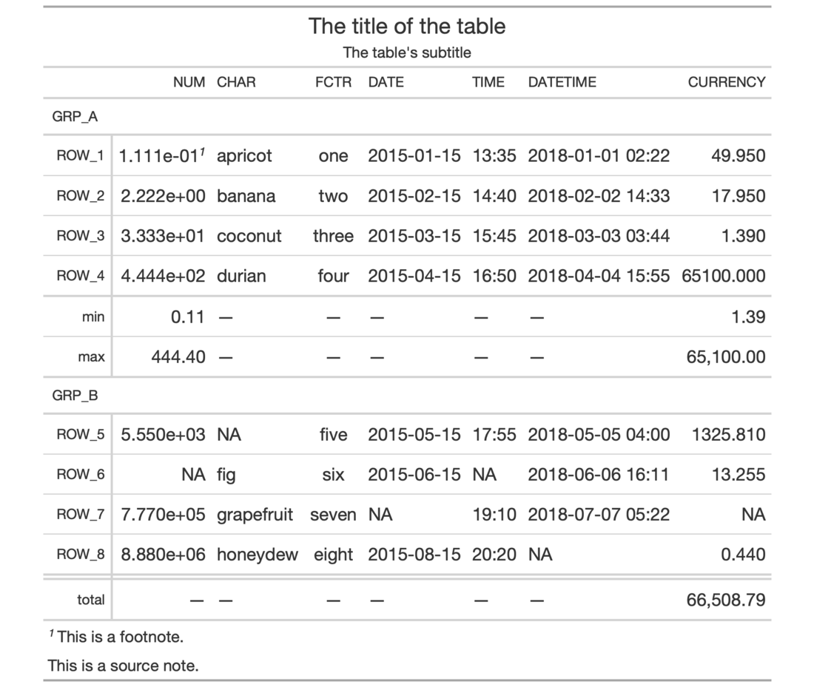

| opt_all_caps {gt} | R Documentation |
Sometimes an all-capitalized look is suitable for a table. With the
opt_all_caps() function, we can transform characters in the column labels,
the stub, and in all row groups in this way (and there's control over which
of these locations are transformed).
opt_all_caps(
data,
all_caps = TRUE,
locations = c("column_labels", "stub", "row_group")
)
data |
A table object that is created using the |
all_caps |
A logical value to indicate whether the text transformation
to all caps should be performed ( |
locations |
Which locations should undergo this text transformation? By
default it includes all of the |
This function serves as a convenient shortcut for <gt_tbl> %>% tab_options(<location>.text_transform = "uppercase", <location>.font.size = pct(80), <location>.font.weight = "bolder") (for all locations selected).
An object of class gt_tbl.

9-4
Other Table Option Functions:
opt_align_table_header(),
opt_css(),
opt_footnote_marks(),
opt_row_striping(),
opt_table_font(),
opt_table_lines(),
opt_table_outline()
# Use `exibble` to create a gt table with
# a number of table parts added; all text
# in the column labels, the stub, and in
# all row groups is to be transformed to
# all caps using `opt_all_caps()`
tab_1 <-
exibble %>%
gt(rowname_col = "row", groupname_col = "group") %>%
summary_rows(
groups = "grp_a",
columns = c(num, currency),
fns = list(
min = ~min(., na.rm = TRUE),
max = ~max(., na.rm = TRUE)
)) %>%
grand_summary_rows(
columns = currency,
fns = list(
total = ~sum(., na.rm = TRUE)
)) %>%
tab_source_note(source_note = "This is a source note.") %>%
tab_footnote(
footnote = "This is a footnote.",
locations = cells_body(columns = 1, rows = 1)
) %>%
tab_header(
title = "The title of the table",
subtitle = "The table's subtitle"
) %>%
opt_all_caps()